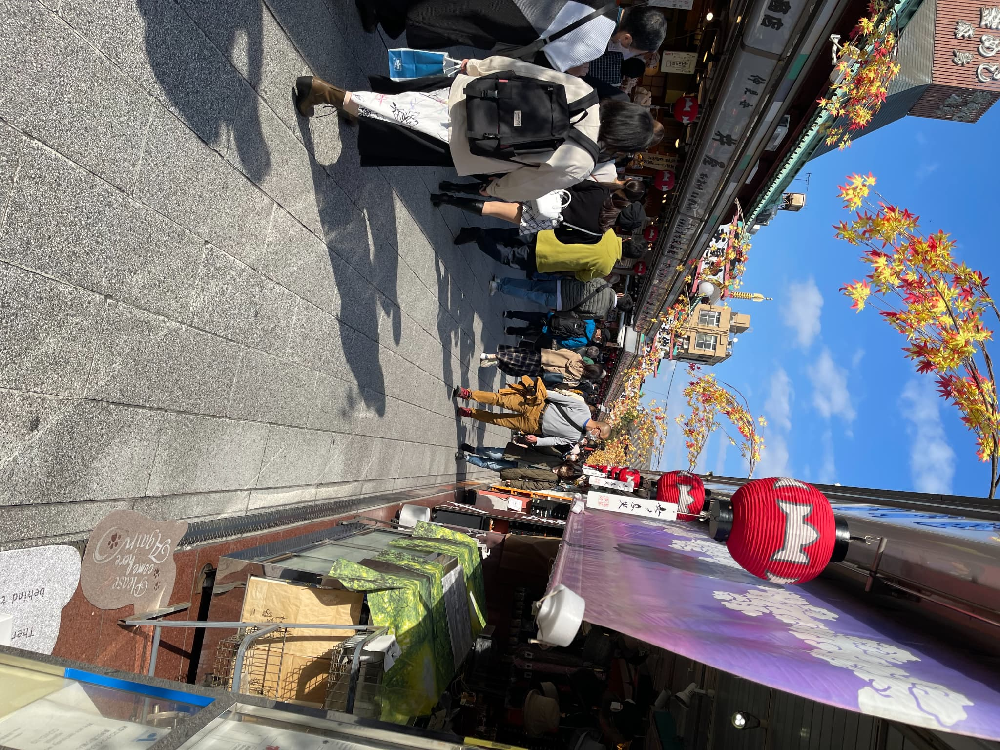
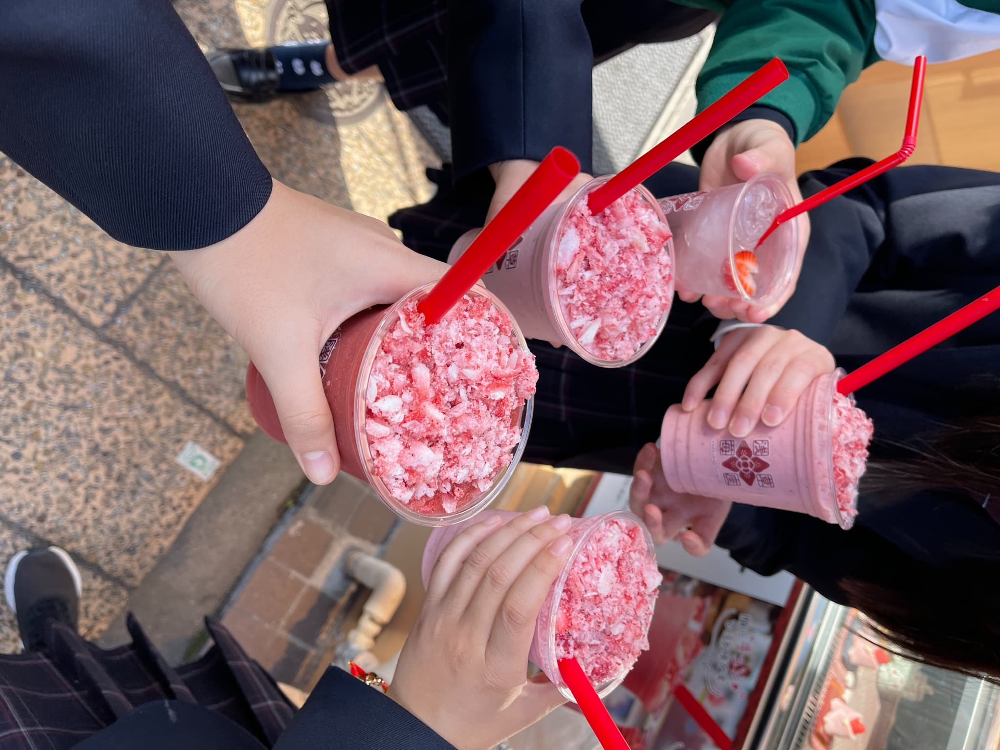
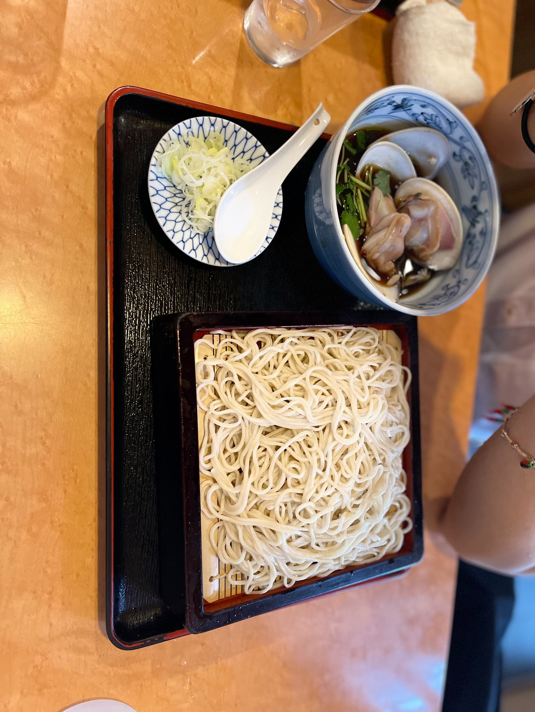
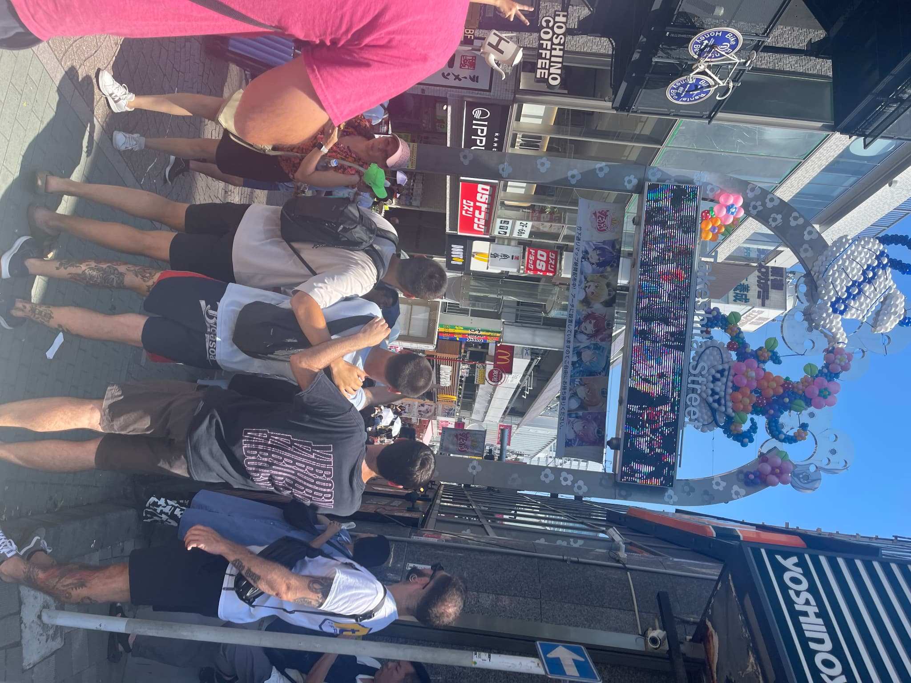
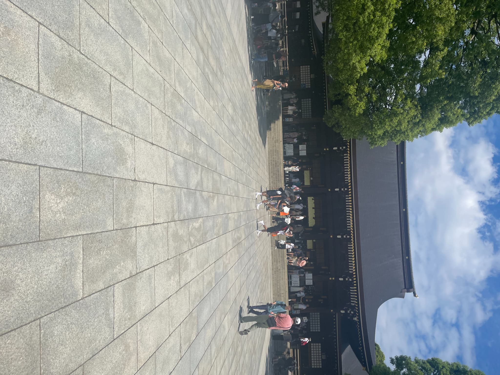
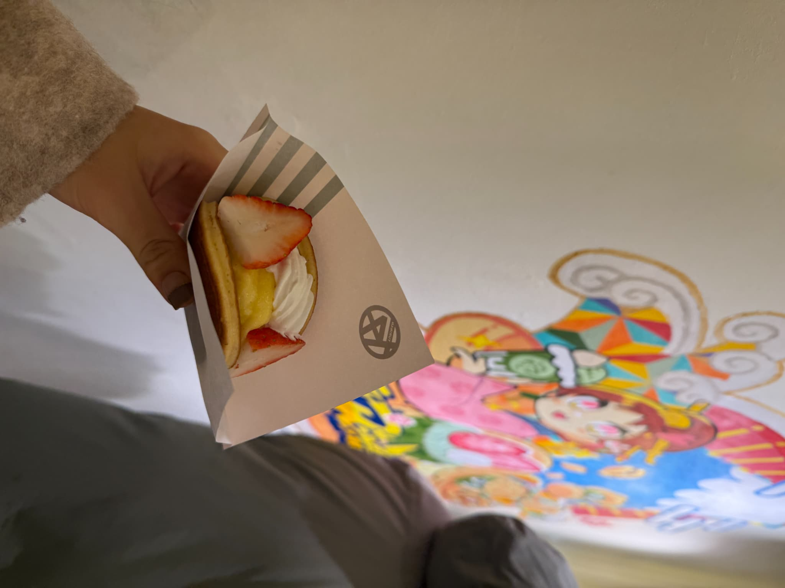

東京の名所 — 浅草・渋谷・原宿
浅草

東京を代表する下町観光地。雷門と仲見世通りで食べ歩きが楽しめます。
浅草のおすすめ食べもの

イチゴが主役の飲み物

お蕎麦屋さん。 関東らしくしょうゆベースの味付けです。
渋谷

若者文化の発信地。スクランブル交差点や新しい商業施設で賑わっています。
原宿

若者の街として有名な原宿。スポットのわりに駅が小さくて驚きました。出口によって雰囲気ががらりと変わります。
原宿のスポットとごはん

明治神宮 とても大きい

有名人が作ったどら焼きや 安定においしかったです